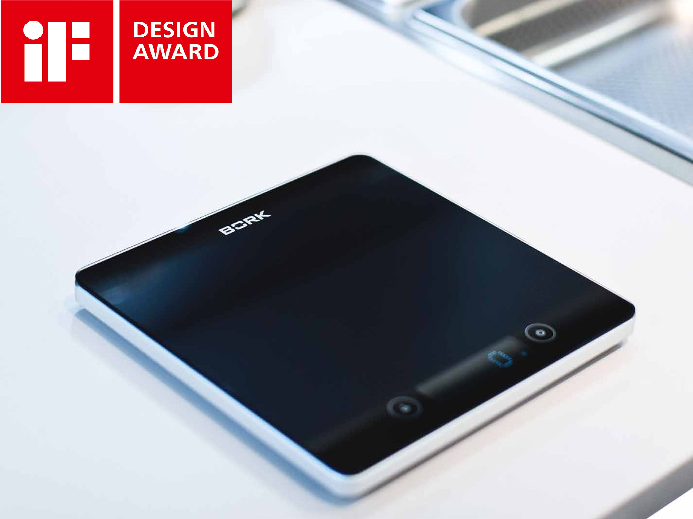
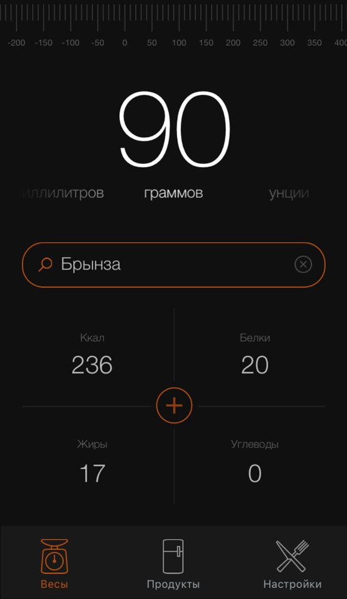
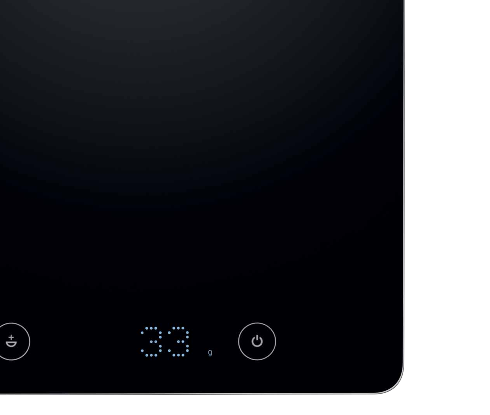

Кухонные весы BORK N780
Уникальный дизайн
Стильный алюминиевый корпус весов и поверхность из ударопрочного стекла идеально впишутся в любой интерьер.
Точность взвешивания
Весы проводят измерения в диапазоне от 1 грамма до 5 килограмм. Пользователям доступны также дополнительные системы мер и весов (унции, фунты, миллилитры). Функция тарирования позволяет последовательно взвешивать различные продукты, не снимая их с весов, и учитывать параметры тары.
Эффективный контроль
Благодаря беспроводным технологиям стандарта Bluetooth 4.0 кухонные весы автоматически отправляют результаты взвешивания на смартфон пользователя, синхронизируя их со специальным мобильным приложением BORK Scale, конвертирующим вес продуктов в калории и количество содержащихся в них белков, жиров и углеводов.
Мобильное приложение BORK SCALE
Приложение автоматически синхронизируется с кухонными весами BORK N780, позволяя определять калорийность взвешиваемых продуктов и количество содержащихся в них белков, жиров и углеводов. Приложение BORK Scale разработано для платформ iOS и Android. Его можно бесплатно загрузить в магазинах: Apple AppStore — https://itunes.apple.com/ru/app/bork-scale/id1030009422?mt=8 Google Play Market — https://play.google.com/store/apps/details?id=ru.bork.scale
Откройте приложение BORK Scale и включите Bluetooth в смартфоне, затем включите кухонные весы. Весы автоматически установят беспроводное соединение со смартфоном, и результаты измерений будут автоматически передаваться в приложение. Данная функция доступна только на смартфонах, поддерживающих стандарт Bluetooth 4.0. Требования к операционной системе: iOS 7.1/Android 4.3 (или более поздние версии). Более подробную информацию о работе мобильного приложения можно найти на сайте www.bork.ru.
Технические характеристики
Напряжение: 6 В
Габариты (В х Ш х Г): 200 х 200 х 20 мм
Диапазон взвешивания: 1–5000 г
Вес: 700 г
Страна-производитель: Китай